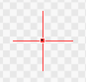
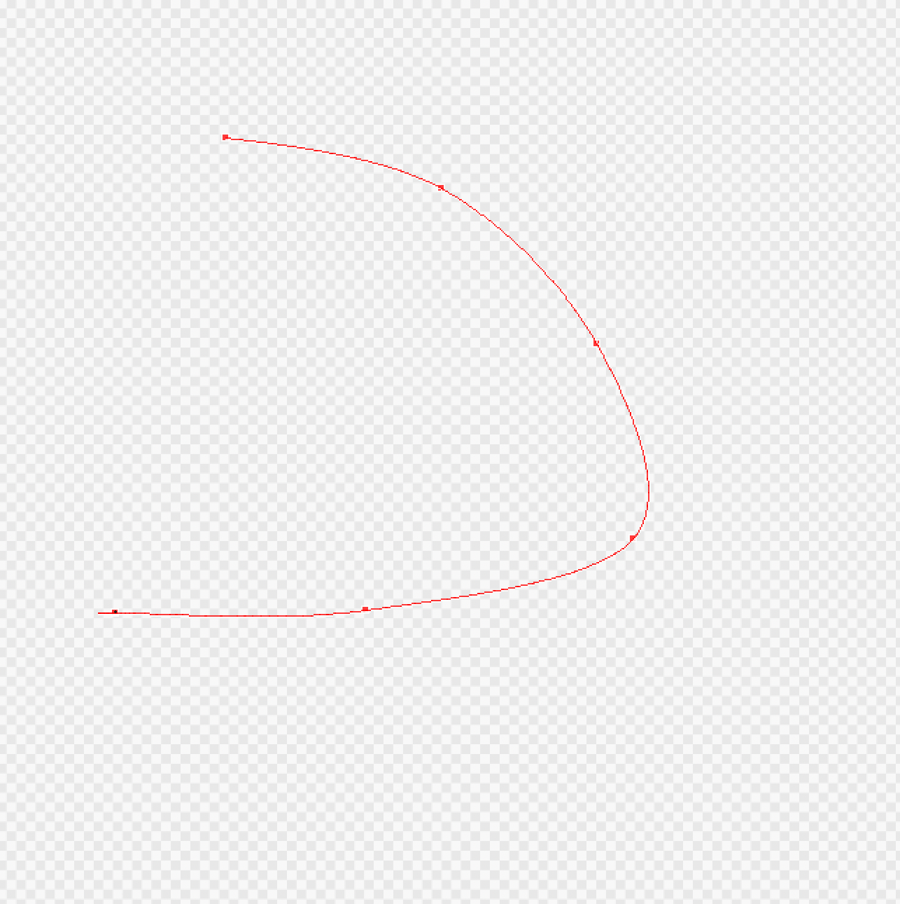
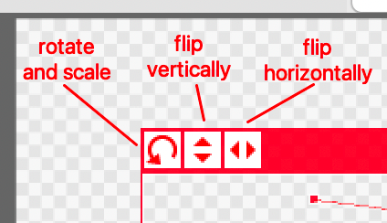
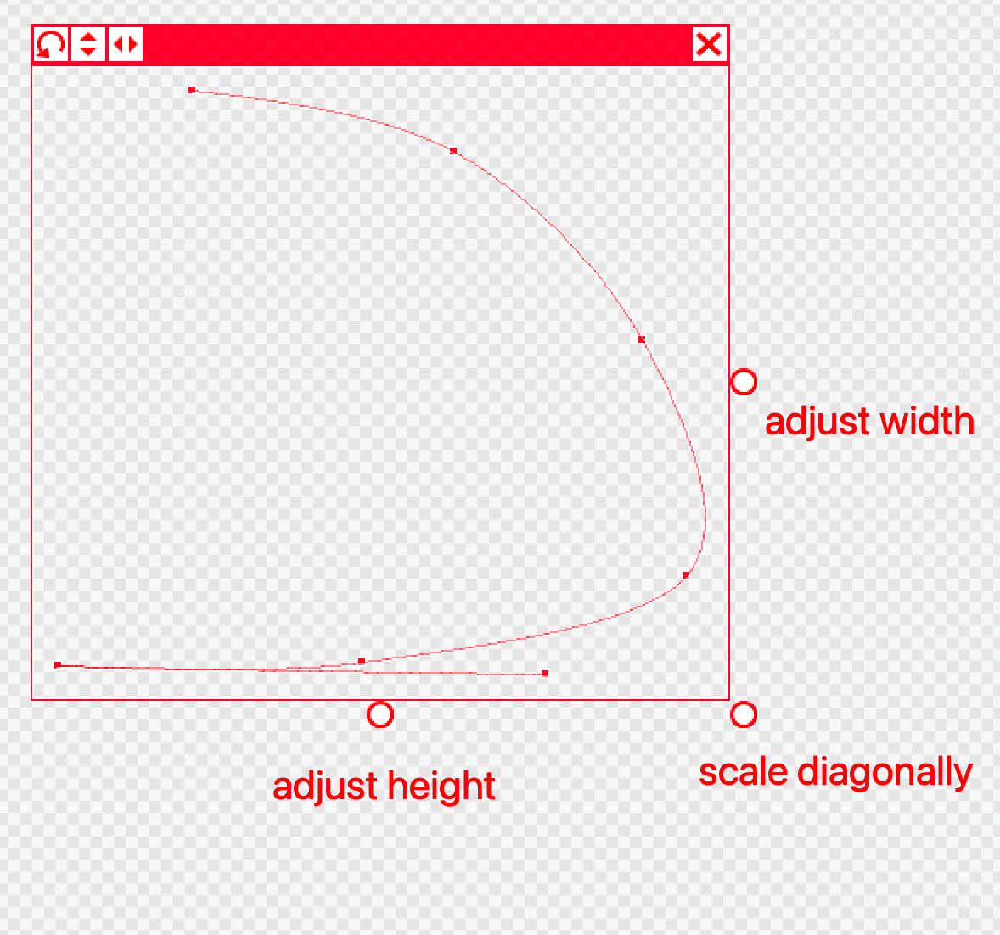

Snap settings allow you to draw lines following only a certain direction. The Curve Snap is slightly different from other snap settings. This page shows you how to use the Curve Snap in your illustration.
In the section labeled "Snap" in the top tool bar, click the Curve Snap icon to turn on the snap. It is represented by a curve with two dots.
Select the first point of your curve by clicking on a point in the canvas with the red crosshair.

Continue to form your curve by selecting points with the crosshair. As you select points, you will see a red line connecting the points to adjust into the curved shape.

To undo a point on the curve, simply right-click. To undo multiple points, simply right-click the number of times matching the number of points you would like to delete. You may only delete points in the order in which they were placed.
When you are finished placing all the points of your curve, double-click to set the snap.
To adjust a specific point along the curve after you have set the snap, hold down the Command (Mac) or Ctrl (Windows) key and drag from the point you would like to adjust. Make adjustments before drawing your curve. Dragging a point on the snap will not affect any lines that you have already drawn.
Draw along the curve. Your line will automatically fit to the curve set by the snap, even if you do not follow it exactly.
To rotate and rescale the curve snap, use the turning arrow icon at the top of the surrounding box. Flip vertically using the up and down arrow icon. Flip horizontally with the left and right arrow icon. You can also resize the snap by dragging the circles on the edges of the surrounding box.

To make a new curve snap, press the circle icon next to the Snap settings at the top of the screen. Repeat the previous steps for any new curves you want to make.
To exit the curve snap, click either the x button in the top right corner of the red box around your curve, select a new Snap setting, or click "Off" in the Snap setting.
Following these steps, you will have drawn a curved line(s) using the Curve Snap tool.